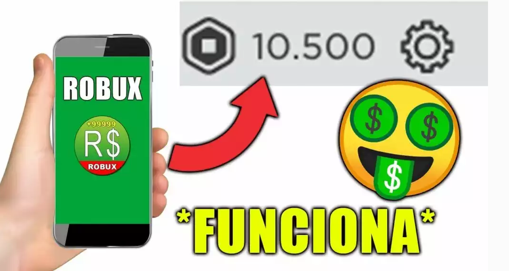

DARMOWE ROBUXY
Istnieje kilka sposobów na zdobycie darmowego Robuxa Roblox., ale nie na wiele sposobów, które można uzyskać Uwolnij Robuxa w tym samym świecie Roblox.
Należy zauważyć, że zawsze będziesz musiał coś zrobić, aby móc je zdobyć, a ponadto będziesz potrzebować pewnej wiedzy, aby tworzyć różne światy gry lub obiekty, które wydają się cenne dla innych graczy.
WAŻNE: Dostać Wszystko PromoCodes de Roblox wolnylub kliknij przycisk
Jeśli chcesz zdobyć słynne kody Roblox Darmowe wszystko Promocodes dostępne na dziś, jesteś we właściwym miejscu. Pamiętaj, bądź na bieżąco, aby nie zabrakło nagród, ponieważ znikają one po pewnym czasie i możesz stracić możliwość ich odebrania.

kody z roblox za darmo wszystko promocodes